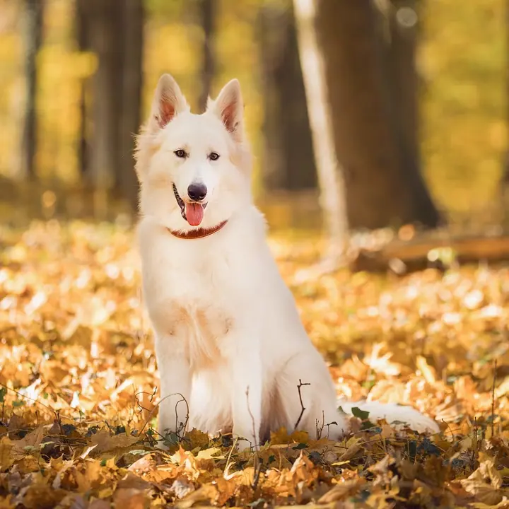
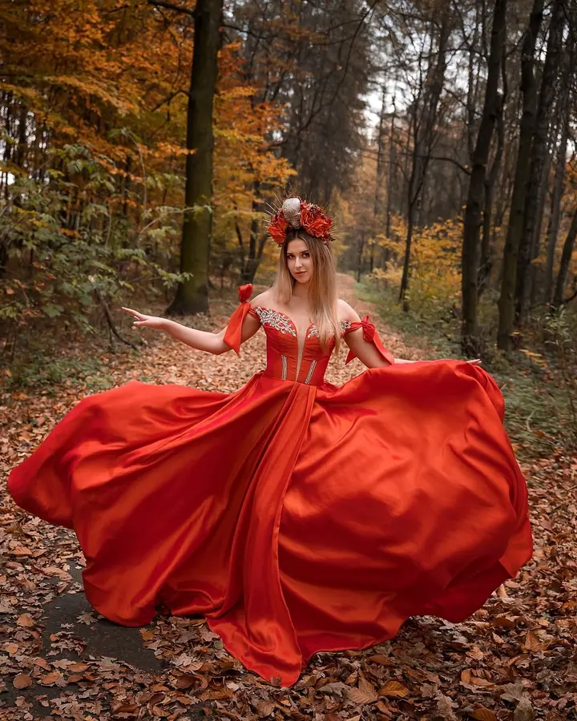
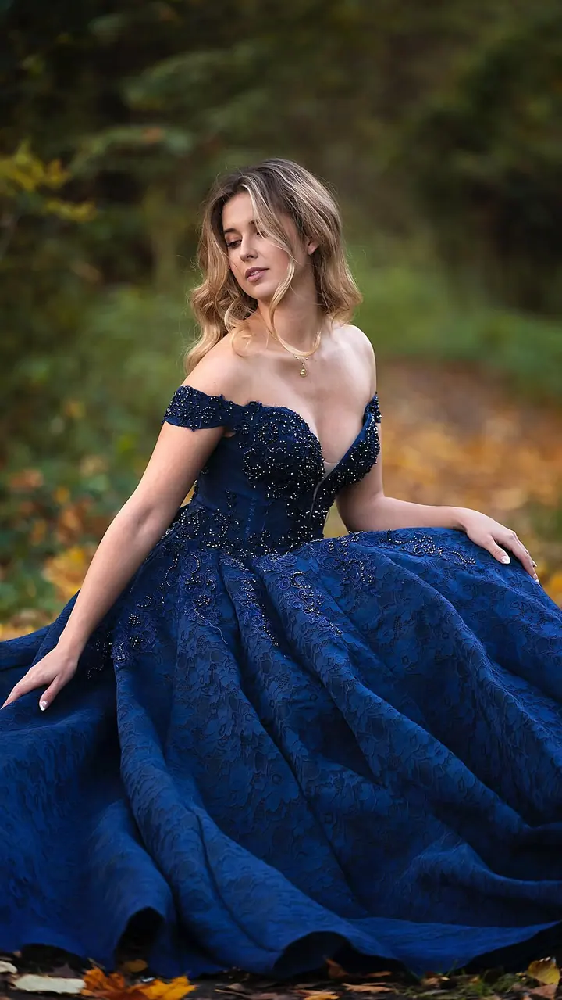
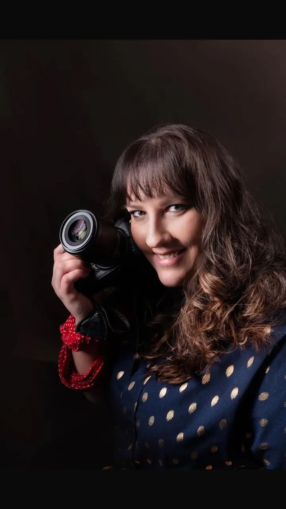

jedna
Mazlíčci
Specializuji se na zvířecí miláčky a fotím citová pouta mezi vámi a vašimi parťáky. I když tu s námi nejsou napořád, fotky vám zůstanou jako trvalá památka.

Fotografka mazlíčků, rodin a těhotenství · Karviná, Ostrava, Dolní Lutyně

Jmenuji se Dáša Jendryščíková a fotím vás i vaše čtyřnohé parťáky v ateliéru v Dolní Lutyni a venku na Karvinsku a Ostravsku. Fotím přirozeně a jemně, bez strojeného pózování, ať přijdete s bříškem nebo s celou rodinou.
Více o mně
Co fotím
jedna
Specializuji se na zvířecí miláčky a fotím citová pouta mezi vámi a vašimi parťáky. I když tu s námi nejsou napořád, fotky vám zůstanou jako trvalá památka.
dvě
Těhotenství je chvíle, kdy se rodí nový život i nový příběh. Společně vytvoříme snímky plné něhy a lásky.
tři
Ať jde o rodinné snímky, dětskou radost nebo zamilované páry, ráda pro vás vytvořím vzpomínku, ke které se budete vracet.
Každý svatební den je jiný. Fotím ho tak, aby vám z něj zůstala vzpomínka na lásku, radost a štěstí.
Přirozeně, jemně a bez strojeného pózování.

Za objektivem
Srdečně vás zdravím, jsem Dáša, velká milovnice zvířat a zapálená fotografka. Když jsem poprvé držela v ruce foťák, nadchla mě myšlenka, že můžu uchovat to, co se jindy snadno vytratí: přirozený úsměv, čistou lásku, jedinečný životní okamžik.
Focení pro mě není jen cvaknutí spouště. Je to setkání s živou bytostí a pokus zachytit její originalitu. Proto ráda fotím domácí mazlíčky, ale i majestátní zvířata, aby dělali svým majitelům radost na věky.
Najdete mě v ateliéru v Dolní Lutyni, venku fotím nejčastěji v okolí Karviné a Bohumína nebo tam, kde se domluvíme. Těším se, že spolu vytvoříme nejen krásné fotky, ale i příjemný zážitek z celého focení.
Dagmar
Napište mi přes formulář, e-mail nebo telefon a pošlete alespoň tři volné termíny. Před focením spolu probereme, co si představujete.
Základní focení trvá 40 až 60 minut, v ateliéru v Dolní Lutyni nebo venku. Poradím vám, jak připravit sebe i své miláčky.
Zhruba do 2–3 dnů vám pošlu odkaz na webovou galerii s náhledy, ze které si vyberete své oblíbené snímky.
Vybrané fotky projdou retuší a do 4–6 týdnů od zaplacení faktury je dostanete v elektronické podobě přes úschovnu.
Portfolio
Otázky
Focení začíná na 1 700 Kč a zahrnuje konzultaci, 40 až 60 minut focení a retuš vybraných snímků. Každá fotografie navíc stojí 200 Kč.
V ateliéru v Dolní Lutyni, venku nejčastěji v okolí Karviné a Bohumína. Jiné místo si klidně domluvíme.
Náhledy k výběru posílám zhruba do 2–3 dnů po focení. Hotové fotografie dodávám do 4–6 týdnů od zaplacení faktury.
Ano, vystavím dárkový poukaz na konkrétní typ focení nebo na vybranou částku. Platí půl roku od vystavení.
Napište pár vět o tom, co si představujete. foto@dajen-fotografka.cz